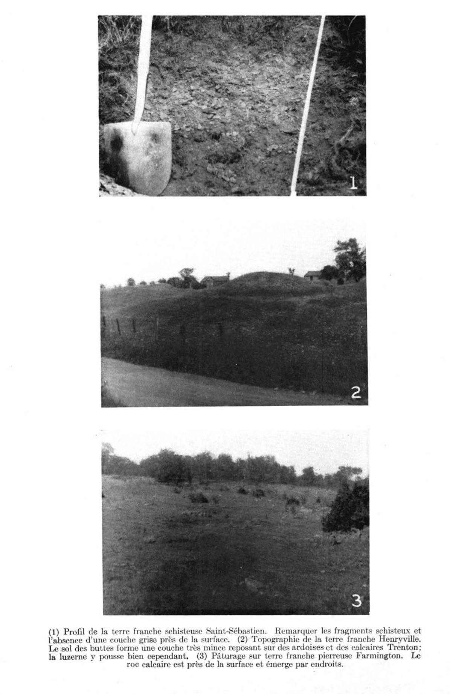
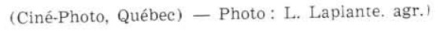
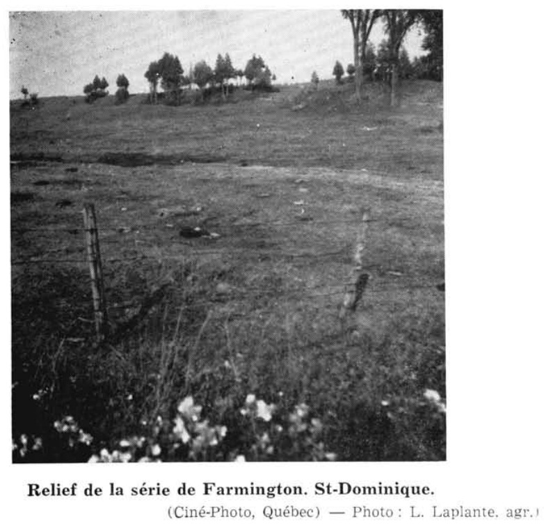

Identification & Caractéristiques Générales
La série de sol Farmington se développe sur un matériau parental constitué d'un till morainique mince, à texture franche ou sablo-limoneuse, reposant directement sur une assise rocheuse calcaire ou dolomitique. Morphologiquement, la profondeur du solum est très restreinte, variant généralement de quelques pouces à un maximum d'environ 15 à 20 pouces, l'orogenèse et l'érosion glaciaire ayant laissé de fréquents affleurements rocheux en surface. La topographie associée à ces dépôts quaternaires est variable, s'étendant de plate à légèrement ondulée ou accidentée, avec des altitudes s'inscrivant généralement entre 75 et 350 pieds.
Le profil pédologique se caractérise par un horizon de surface (A) de type loam ou loam brun à brun grisâtre foncé, d'une structure granulaire et d'une réaction chimique voisine de la neutralité. Cet horizon supérieur meuble et friable repose directement soit sur un sous-sol (B ou C) brun jaunâtre ou brun foncé contenant de nombreux fragments calcaires anguleux, soit directement sur la roche sous-jacente altérée. Le régime hydropédologique est marqué par un drainage naturel variant de modérément bon à excessif selon la pente, couplé à une très faible capacité de rétention en eau utile en raison de la minceur du solum. Les zones planes ou déprimées affichent parfois un drainage imparfait, tandis que les secteurs déclives subissent un ressuyage rapide menant à des déficits hydriques sévères en période estivale.
Sur le plan agronomique, la série Farmington présente des contraintes majeures qui limitent fortement son aptitude aux grandes cultures et aux labours mécanisés, principalement en raison de la faible profondeur effective du sol, de la pierrosité et de la fréquence des affleurements rocheux. La mise en valeur agricole se restreint quasi exclusivement aux pâturages permanents ou aux prairies fourragères, bien que la production végétale y décline rapidement lors des sécheresses estivales prolongées, malgré un potentiel de fertilité intrinsèque élevé et des pH proches de la neutralité favorisant certaines légumineuses comme la luzerne. En conséquence, une proportion significative de ces terrains demeure occupée par des peuplements forestiers, notamment des érablières ou des peuplements de thuya, ou est affectée à la sylviculture.
Classification Taxonomique & Environnement Pédologique
| Ordre Pédologique | Brunisolique |
|---|---|
| Grand Groupe (SCSS) | Brunisol dystrique |
| Sous-Groupe Taxonomique | Brunisol |
| Famille Pédologique | Loameuse, mixte, neutre, douce et subaquique |
| Mode de Dépôt Parental | Dépôts alluvionnaires ou glacio-marins de la vallée du Saint-Laurent |
| Classe de Drainage Naturel | Imparfait à mauvais |
| Régime Thermique & Humidité | Mésique / Perhumide à subhumide |
Description Morphologique du Profil Type
Séquences génétiques des horizons pédologiques caractérisant le profil type représentatif de la série Farmington :
Profil naturel (vierge) — Comté de Joliette
✓ Source : Comté de Joliette — Page 108Couleur Munsell : Non précisée
Structure & Consistance : Polyédrique à granulaire
Description morphologique : ............ Débris de plantes et feuilles non décomposées.
Couleur Munsell : 2.5Y 3/2
Structure & Consistance : Polyédrique à granulaire
Description morphologique : ............ Loam sableux, brun gris très foncé (2.5Y 3/2), meuble.
Couleur Munsell : 10YR 6/6
Structure & Consistance : Polyédrique à granulaire
Description morphologique : ............ Loam sableux, jaune brun (10YR 6/6), meuble.
Couleur Munsell : Non précisée
Structure & Consistance : Polyédrique à granulaire
Description morphologique : ............ Roc calcaire de Trenton.
Profil forestier / boisé — Comté de Saint-hyacinthe
✓ Source : Comté de Saint-hyacinthe — Page 48Couleur Munsell : Non précisée
Structure & Consistance : Polyédrique à granulaire
Description morphologique : Litière et matériau organique constitués de feuilles et de brindilles, peu à assez décomposés; limite abrupte, nette; réaction fortement acide.
Couleur Munsell : 10YR 3/3
Structure & Consistance : Granulaire
Description morphologique : Loam sableux; brun foncé (10YR 3/3); structure granulaire, fine, assez développée; consistance très friable; assez poreux; fragments grossiers constitués de plaquettes et de graviers fins à grossiers; limite nette, régulière; réaction faiblement acide.
Couleur Munsell : 10YR 4/6
Structure & Consistance : Granulaire
Description morphologique : Loam sableux graveleux; brun jaunâtre foncé (10YR 4/6); structure granulaire, fine à moyenne, peu développée; consistance très friable; très poreux; fragments grossiers constitués de plaquettes et de graviers fins à grossiers; limite graduelle, ondulée; réaction fortement acide.
Couleur Munsell : 10YR 3/5 (matrice), 10YR 4/6 (marbrures)
Structure & Consistance : Granulaire
Description morphologique : Loam sableux graveleux; brun jaunâtre foncé (10YR 3/5); mouchetures brun jaunâtre foncé (10YR 4/6), peu nombreuses, fines, peu contrastées; structure granulaire, fine à moyenne, peu développée; consistance très friable; assez poreux; fragments grossiers constitués de plaquettes et de graviers fins à grossiers; limite nette, ondulée; réaction moyennement acide.
Couleur Munsell : 10YR 4/6
Structure & Consistance : Polyédrique subangulaire
Description morphologique : Loam limoneux; brun grisâtre foncé à brun grisâtre (10YR 4,5/2); mouchetures brun jaunâtre foncé (10YR 4/6), assez nombreuses, moyennes, assez contrastées; structure polyédrique subangulaire, fine à moyenne, peu à assez développée; consistance friable; assez poreux; fragments grossiers constitués de plaquettes, de graviers fins à grossiers et de dalles; limite nette, brisée; réaction neutre.
Couleur Munsell : 10YR 4/1
Structure & Consistance : Granulaire
Description morphologique : Loam argileux; noir à brun très foncé, (10YR 4/1,5); structure granulaire, fine à moyenne, assez développée; consistance très friable; peu poreux; limite nette, irrégulière; effervescence forte; réaction faiblement acide.
Couleur Munsell : Non précisée
Structure & Consistance : Polyédrique à granulaire
Description morphologique : Schiste calcaire du Groupe de Trenton; effervescence forte.
Profils Photographiques & Planches de Terrain
Documents iconographiques, figures pédologiques et coupes de terrain documentées dans les mémoires d'inventaire pour de la série Farmington :





Propriétés Physico-Chimiques & Analyses de Laboratoire
| Horizon | Prof. (pces) | pH | C org. % | N % | C/N | Sable grossier % | Sable fin % | Sable tot. % | Limon % | Argile % | Ca éch. | Mg éch. | K éch. | Na éch. | Bases tot. | C.E.C. | Saturation % |
|---|---|---|---|---|---|---|---|---|---|---|---|---|---|---|---|---|---|
| Couche de surface | N | 5 | 5 | 5 | 5 | 5 | 5 | 5 | 5 | 5 | 5 | 5 | 5 | 5 | 5 | 5 | L, LLi |
| Moyenne | 3,6 | 11,0 | 13,9 | 14,4 | 44,0 | 39,1 | 16,8 | 6,4 | 3,21 | 8,8 | 2,59 | 0,12 | 0,10 | 19,06 | 10,6 | ||
| Inférieure | 0,0 | 0,3 | 10,3 | 5,6 | 36,5 | 31,3 | 13,9 | 5,4 | 2,49 | 5,1 | 0,96 | 0,08 | 0,00 | 14,46 | 5,0 | ||
| Supérieure | 7,7 | 21,6 | 17,6 | 23,3 | 51,6 | 47,0 | 19,7 | 7,5 | 4,08 | 14,8 | 5,59 | 0,15 | 0,20 | 25,04 | 21,2 | ||
| CV | 117,0 | 101,8 | 27,3 | 64,2 | 17,9 | 21,0 | 18,0 | 17,2 | 13,6 | 21,9 | 49,8 | 30,8 | 109,3 | 9,1 | 27,9 | ||
| Classe de contenu** | M | M | M | M | TF | F | M | TF | |||||||||
| Sous-sol | N | 8 | 8 | 8 | 8 | 8 | 8 | 8 | 8 | 8 | 8 | 8 | 8 | 8 | 8 | 8 | |
| Moyenne | 5,1 | 8,7 | 12,5 | 13,7 | 42,7 | 41,6 | 15,7 | 7,0 | 2,18 | 8,2 | 3,07 | 0,10 | 0,08 | 18,78 | 5,7 | ||
| Inférieure | 1,7 | 1,5 | 5,1 | 8,1 | 29,2 | 30,7 | 11,0 | 6,3 | 1,19 | 5,2 | 1,59 | 0,06 | 0,03 | 13,09 | 1,9 | ||
| Supérieure | 8,5 | 15,8 | 19,8 | 19,3 | 56,2 | 52,4 | 20,5 | 7,6 | 3,62 | 12,9 | 5,40 | 0,14 | 0,13 | 26,76 | 14,6 | ||
| CV | 99,5 | 123,5 | 87,9 | 61,2 | 47,0 | 39,0 | 45,0 | 14,3 | 48,0 | 27,3 | 48,0 | 51,9 | 87,2 | 17,0 | 65,9 |
Particularités Régionales, Phases & Variantes Pédologiques
Déclinaisons régionales, faciès texturaux, phases d'érosion ou de pierrosité et variantes cartographiées par étude pour de la série Farmington :
| Étude Régionale | Symbole | Appellation / Phase / Variante | Différenciation avec la série type (Analyse pédologique) |
|---|---|---|---|
| Comté de Napierville | FA |
FARMINGTON (FA) | Modalité modale de référence (type de base de la série). |
| Comté de Saint-hyacinthe | FA |
FARMINGTON (FA) | Conforme à la série type de référence (caractéristiques texturales et drainage identiques). |
| Comté de Shefford | FA |
Terre franche Farmington | Conforme à la série type de référence (caractéristiques texturales et drainage identiques). |
| Comté de Argenteuil | FA |
SÉRIE FARMINGTON (2,105 acres) | Conforme à la série type de référence (caractéristiques texturales et drainage identiques). |
| Comté de Joliette | FA |
Loam sableux de Farmington (F) - (1,307 acres) | Conforme à la série type de référence (caractéristiques texturales et drainage identiques). |
| Sols de l'île de Montréal | FA |
SÉRIE FARMINGTON | Conforme à la série type de référence (caractéristiques texturales et drainage identiques). |
Distribution Pédo-Paysagère (Couverture PPS)
Série historique ou locale sans polygone vectoriel individualisé autonome dans la couche Couverture_pps 2026.
Aptitudes Agronomiques, Hydropédologie & Conservation des Sols
Indicateurs Hydropédologiques & Vulnérabilité à l'Érosion (BDHP 2026)
Interprétation BDHP : Potentiel de ruissellement modérément élevé. Faible taux d'infiltration, présence d'horizons ralentissant le drainage descendant.
Classement selon l'Inventaire des Terres du Canada (ITC / CLI) : Classe 2w.
- Potentiel agricole : Terroir adapté aux cultures régionales selon la texture dominante et la régie de drainage.
- Contraintes majeures : Imparfait à mauvais. Risque d'engorgement temporaire ou d'excès d'eau printanier.
- Gestion & Aménagement : Drainage souterrain ou superficiel préconisé sur les terres planes. Chaulage et apport organique régulier selon les bilans agronomiques.
- Cultures adaptées : Grandes cultures (maïs, soya, céréales), prairies fourragères et cultures maraîchères selon le contexte géomorphologique.